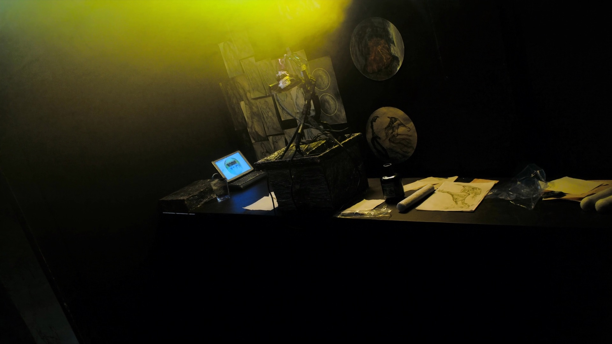

ink studio / original work
Не тату.
Артефакт.
Графика, реализм, олдскул и большие идеи. Разрабатываем эскиз как объект, который должен пережить настроение дня.
принести идею
01 / processStyle
index.
Выбирайте не из каталога картинок, а из языка, которым мастер будет думать вместе с вами.
01Графика / lineworkтонкая линия, дотворк, геометрияот 5 000 ₽
02Blackworkплотный чёрный, ритм, контрастот 8 000 ₽
03Realismпортреты, тени, мягкий переходот 12 000 ₽
04Cover-upперекрытие и реставрация старогоот 15 000 ₽